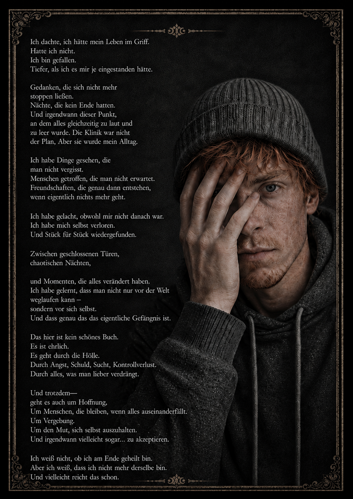

The Good, The Bad and The Junkie
Ein dunkler, ehrlicher Roman über geschlossene Türen, chaotische Nächte und den Moment, in dem aus Absturz langsam wieder Richtung wird.

4,20 €Download folgt
Ein dunkler, ehrlicher Roman über geschlossene Türen, chaotische Nächte und den Moment, in dem aus Absturz langsam wieder Richtung wird.
